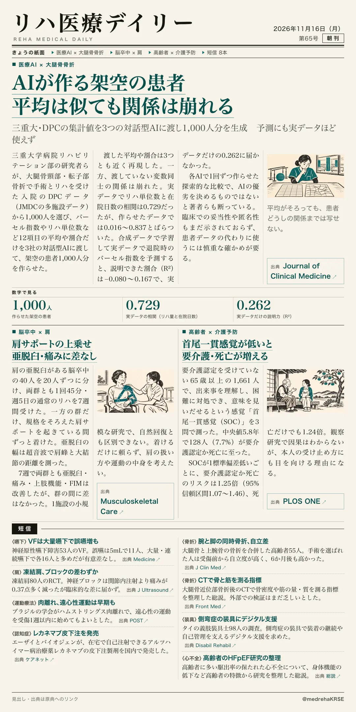
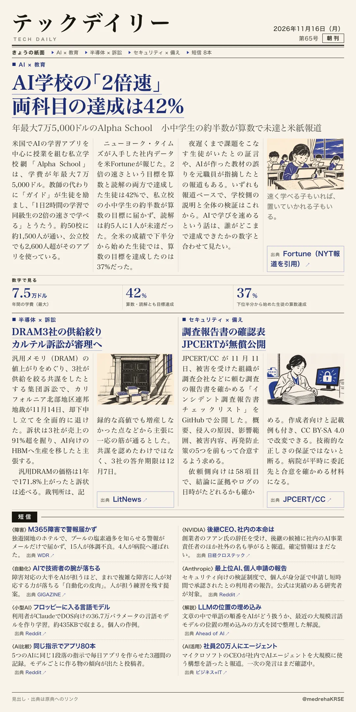

リハ医療デイリー
AIが作る架空の患者 平均は似ても関係は崩れる
三重大・DPCの集計値を3つの対話型AIに渡し1,000人分を生成 予測にも実データほど使えず

テックデイリー
AI学校の「2倍速」 両科目の達成は42%
年最大7万5,000ドルのAlpha School 小中学生の約半数が算数で未達と米紙報道

三重大・DPCの集計値を3つの対話型AIに渡し1,000人分を生成 予測にも実データほど使えず

年最大7万5,000ドルのAlpha School 小中学生の約半数が算数で未達と米紙報道
